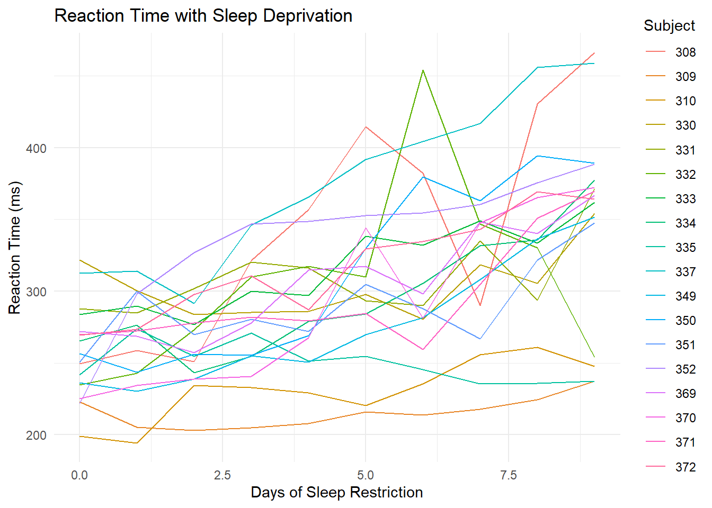
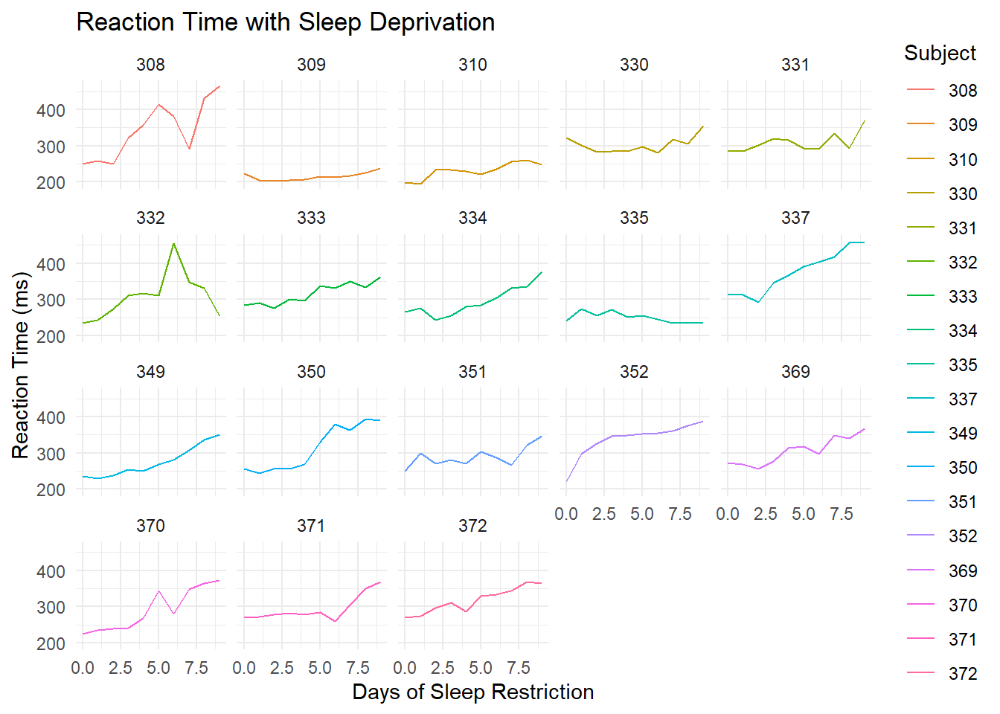

Consider data on a sleep study in which subjects received only 3 hours of sleep per night. Each day, their reaction time to a stimulus (in ms) was recorded.1
library(dplyr)
Warning: package 'dplyr' was built under R version 4.4.2
Attaching package: 'dplyr'
The following objects are masked from 'package:stats':
filter, lag
The following objects are masked from 'package:base':
intersect, setdiff, setequal, union
library(tidyverse)
Warning: package 'tidyverse' was built under R version 4.4.2
Warning: package 'ggplot2' was built under R version 4.4.2
Warning: package 'tibble' was built under R version 4.4.2
Warning: package 'tidyr' was built under R version 4.4.2
Warning: package 'readr' was built under R version 4.4.2
Warning: package 'purrr' was built under R version 4.4.2
Warning: package 'stringr' was built under R version 4.4.2
Warning: package 'forcats' was built under R version 4.4.2
Warning: package 'lubridate' was built under R version 4.4.2
── Conflicts ────────────────────────────────────────── tidyverse_conflicts() ──
✖ dplyr::filter() masks stats::filter()
✖ dplyr::lag() masks stats::lag()
ℹ Use the conflicted package (<http://conflicted.r-lib.org/>) to force all conflicts to become errors
library(mosaic)
Warning: package 'mosaic' was built under R version 4.4.2
Registered S3 method overwritten by 'mosaic':
method from
fortify.SpatialPolygonsDataFrame ggplot2
The 'mosaic' package masks several functions from core packages in order to add
additional features. The original behavior of these functions should not be affected by this.
Attaching package: 'mosaic'
The following object is masked from 'package:Matrix':
mean
The following object is masked from 'package:purrr':
cross
The following object is masked from 'package:ggplot2':
stat
The following objects are masked from 'package:dplyr':
count, do, tally
The following objects are masked from 'package:stats':
binom.test, cor, cor.test, cov, fivenum, IQR, median, prop.test,
quantile, sd, t.test, var
The following objects are masked from 'package:base':
max, mean, min, prod, range, sample, sum
Subject - number to represent the individual being studied
Day_N - Reaction time in ms on given day N
Part b
Suppose I ask you to plot each subject’s reaction time (y-axis) vs the number of days of sleep restriction (x-axis). “Sketch” out in words what the first few rows of the data need to look like in order to do this. It might help to think about what you’d need to complete the plotting frame:
ggplot(___, aes(y = ___, x = ___, color = ___))
y - reaction time
x - days of sleep restriction
color - subject
Need to make table longer to combine days
Part c
How can you obtain the dataset you sketched in part b?
just using sleep_wide
pivot_longer() !!! This one !!!
pivot_wider()
Exercise 2: Pivot longer
To plot reaction time by day for each subject, we need to reshape the data into a long format where each row represents a subject/day combination. Specifically, we want a dataset with 3 columns and a first few rows that look something like this:
Subject
day
reaction_time
308
0
249.56
308
1
258.70
308
2
250.80
Part a
Use pivot_longer() to create the long-format dataset above. Show the first 3 lines (head(3)), which should be similar to those above. Follow-up: Thinking forward to plotting reaction time vs day for each subject, what would you like to fix / change about this dataset?
# For cols, try 2 appproaches: using - and starts_with# ___ |> # pivot_longer(cols = ___, names_to = "___", values_to = "___")
Besides putting each argument on a different line for readability and storing the results, what changed in the code?
It became longer, switching from separate days to just one day column and one reaction time variable for each subject
How did this impact how the values are recorded in the day column?
They are spread out 0-N
Part c
Using sleep_long, construct a line plot of reaction time vs day for each subject. This will look goofy no matter what you do. Why? HINT: look back at head(sleep_long). What class or type of variables are Subject and day? What do we want them to be?
ggplot(sleep_long, aes(x=day, y = reaction_time, color = Subject)) +geom_line() +theme_minimal() +labs(title ="Reaction Time with Sleep Deprivation",x ="Days of Sleep Restriction",y ="Reaction Time (ms)",Color ="Subject")
Exercise 3: Changing variable classes & plotting
Let’s finalize sleep_long by mutating the Subject variable to be a factor (categorical) and the day variable to be numeric (quantitative). Take note of the mutate() code! You’ll use this type of code a lot.
sleep_long <- sleep_wide |>pivot_longer(cols =-Subject,names_to ="day",names_prefix ="day_",values_to ="reaction_time") |>mutate(Subject =as.factor(Subject), day =as.numeric(day))# Check it out# Same data, different classhead(sleep_long)
# Make a line plot of reaction time by day for each subject# Put these all on the same frameggplot(sleep_long, aes(x=day, y = reaction_time, color = Subject)) +geom_line() +theme_minimal() +labs(title ="Reaction Time with Sleep Deprivation",x ="Days of Sleep Restriction",y ="Reaction Time (ms)",Color ="Subject")

# Make a line plot of reaction time by day for each subject# Put these all on separate frames (one per subject)ggplot(sleep_long, aes(x=day, y = reaction_time, color = Subject)) +geom_line() +theme_minimal() +labs(title ="Reaction Time with Sleep Deprivation",x ="Days of Sleep Restriction",y ="Reaction Time (ms)") +facet_wrap(~ Subject)

Part b
Summarize what you learned from the plots. For example:
What’s the general relationship between reaction time and sleep?
Generally everyone had longer reaction times as the days of sleep restriction went on
Is this the same for everybody? What differs?
Not everyone had these reactions; some people had a spike down in reaction time before resuming, and some like 335 had a lesser reaction time over time.
Exercise 4: Pivot wider
Make the data wide again, with each day becoming its own column.
Part a
Adjust the code below. What don’t you like about the column labels?
Load data on songs that hit the billboard charts around the year 2000. Included for each song is the artist name, track name, the date it hit the charts (date.enter), and wk-related variables that indicate rankings in each subsequent week on the charts:
# Load datalibrary(tidyr)data("billboard")# Check it outhead(billboard)
In using this data, you’ll need to determine if and when the data needs to be reshaped for the task at hand.
Part a
Construct and summarize a plot of how a song’s Billboard ranking its 2nd week on the chart (y-axis) is related to its ranking the 1st week on the charts (x-axis). Add a reference line geom_abline(intercept = 0, slope = 1). Songs above this line improved their rankings from the 1st to 2nd week.
ggplot(billboard, aes(x=wk1, y = wk2)) +geom_point() +geom_abline(intercept =0, slope =1)
Warning: Removed 5 rows containing missing values or values outside the scale range
(`geom_point()`).
Part b
Use your wrangling tools to identify which songs are those above the line in Part a, i.e. with rankings that went up from week 1 to week 2.
Part c
Define a new dataset, nov_1999, which:
only includes data on songs that entered the Billboard charts on November 6, 1999
keeps all variables excepttrack and date.entered. HINT: How can you avoid writing out all the variable names you want to keep?
# Define nov_1999# Confirm that nov_1999 has 2 rows (songs) and 77 columns
Part d
Create and discuss a visualization of the rankings (y-axis) over time (x-axis) for the 2 songs in nov_1999. There are hints below (if you scroll), but you’re encouraged to play around and use as few hints as possible.
Hints:
Should you first pivot wider or longer?
Once you pivot, the week number is turned into a character variable. How can you change it to a number?
Exercise 6: Practice with the Daily Show
The data associated with this article is available in the fivethirtyeight package, and is loaded into daily below. It includes a list of every guest to ever appear on Jon Stewart’s The Daily Show, a “late-night talk and satirical news” program (per Wikipedia). Check out the dataset and note that when multiple people appeared together, each person receives their own line:
library(fivethirtyeight)
Warning: package 'fivethirtyeight' was built under R version 4.4.2
Some larger datasets need to be installed separately, like senators and
house_district_forecast. To install these, we recommend you install the
fivethirtyeightdata package by running:
install.packages('fivethirtyeightdata', repos =
'https://fivethirtyeightdata.github.io/drat/', type = 'source')
In analyzing this data, you’ll need to determine if and when the data needs to be reshaped.
Part a
Identify the 15 guests that appeared the most. (This isn’t a very diverse guest list!)
Part b
CHALLENGE: Create the following data set containing 19 columns:
The first column should have the 15 guests with the highest number of total appearances on the show, listed in descending order of number of appearances.
17 columns should show the number of appearances of the corresponding guest in each year from 1999 to 2015 (one per column).
Another column should show the total number of appearances for the corresponding guest over the entire duration of the show.
There are hints below (if you scroll), but you’re encouraged to play around and use as few hints as possible.
HINTS: There are lots of ways to do this. You don’t necessarily need all of these hints.
First obtain the number of times a guest appears each year.
Add a new column which includes the total number of times a guest appears across all years.
Pivot (longer or wider?). When you do, use values_fill = 0 to replace NA values with 0.
Arrange, then and keep the top 15.
Part c
Let’s recreate the first figure from the article. This groups all guests into 3 broader occupational categories. However, our current data has 18 categories:
daily |>count(group)
# A tibble: 18 × 2
group n
<chr> <int>
1 Academic 103
2 Acting 930
3 Advocacy 24
4 Athletics 52
5 Business 25
6 Clergy 8
7 Comedy 150
8 Consultant 18
9 Government 40
10 Media 751
11 Military 16
12 Misc 45
13 Musician 123
14 Political Aide 36
15 Politician 308
16 Science 28
17 media 5
18 <NA> 31
Let’s define a new dataset that includes a new variable, broad_group, that buckets these 18 categories into the 3 bigger ones used in the article. And get rid of any rows missing information on broad_group. You’ll learn the code soon! For now, just run this chunk:
plot_data <- daily |>mutate(broad_group =case_when( group %in%c("Acting", "Athletics", "Comedy", "Musician") ~"Acting, Comedy & Music", group %in%c("Media", "media", "Science", "Academic", "Consultant", "Clergy") ~"Media", group %in%c("Politician", "Political Aide", "Government", "Military", "Business", "Advocacy") ~"Government and Politics",.default =NA )) |>filter(!is.na(broad_group))
Now, using the broad_group variable in plot_data, recreate the graphic from the article, with three different lines showing the fraction of guests in each group over time. Note: You’ll have to wrangle the data first.
Gregory Belenky, Nancy J. Wesensten, David R. Thorne, Maria L. Thomas, Helen C. Sing, Daniel P. Redmond, Michael B. Russo and Thomas J. Balkin (2003) Patterns of performance degradation and restoration during sleep restriction and subsequent recovery: a sleep dose-response study. Journal of Sleep Research 12, 1–12.↩︎
Source Code
---title: "Reshaping Data"editor: markdown: wrap: sentence---## Exercises### Exercise 1: What's the problem? {.unnumbered}Consider data on a sleep study in which subjects received only 3 hours of sleep per night.Each day, their reaction time to a stimulus (in ms) was recorded.[^ica-reshaping-1][^ica-reshaping-1]: Gregory Belenky, Nancy J. Wesensten, David R. Thorne, Maria L. Thomas, Helen C. Sing, Daniel P. Redmond, Michael B. Russo and Thomas J. Balkin (2003) Patterns of performance degradation and restoration during sleep restriction and subsequent recovery: a sleep dose-response study. Journal of Sleep Research 12, 1–12.```{r}library(dplyr)library(tidyverse)library(mosaic)library(lubridate)sleep_wide <-read.csv("https://mac-stat.github.io/data/sleep_wide.csv")head(sleep_wide)```#### Part a {.unnumbered}What are the units of observation in `sleep_wide`?- Subject - number to represent the individual being studied- Day_N - Reaction time in ms on given day N#### Part b {.unnumbered}Suppose I ask you to plot each subject's reaction time (y-axis) vs the number of days of sleep restriction (x-axis)."Sketch" out in words what the first few rows of the data need to look like in order to do this.It might help to think about what you'd need to complete the plotting frame:`ggplot(___, aes(y = ___, x = ___, color = ___))`y - reaction timex - days of sleep restrictioncolor - subjectNeed to make table longer to combine days#### Part c {.unnumbered}How can you obtain the dataset you sketched in part b?- just using `sleep_wide`- `pivot_longer() !!! This one !!!`- `pivot_wider()`### Exercise 2: Pivot longer {.unnumbered}To plot reaction time by day for each subject, we need to reshape the data into a **long** format where each row represents a subject/day combination.Specifically, we want a dataset with 3 columns and a first few rows that look something like this:| Subject | day | reaction_time ||--------:|----:|--------------:|| 308 | 0 | 249.56 || 308 | 1 | 258.70 || 308 | 2 | 250.80 |#### Part a {.unnumbered}Use `pivot_longer()` to create the long-format dataset above.Show the first 3 lines (`head(3)`), which should be *similar* to those above.Follow-up: Thinking forward to plotting reaction time vs day for each subject, what would you like to fix / change about this dataset?```{r}# For cols, try 2 appproaches: using - and starts_with# ___ |> # pivot_longer(cols = ___, names_to = "___", values_to = "___")```#### Part b {.unnumbered}Run this chunk:```{r}sleep_long <- sleep_wide |>pivot_longer(cols =-Subject,names_to ="day",names_prefix ="day_",values_to ="reaction_time")head(sleep_long)```Follow-up:- Besides putting each argument on a different line for readability and storing the results, what changed in the code? - It became longer, switching from separate days to just one day column and one reaction time variable for each subject- How did this impact how the values are recorded in the `day` column? - They are spread out 0-N#### Part c {.unnumbered}Using `sleep_long`, construct a line plot of reaction time vs day for each subject.This will look goofy no matter what you do.Why?HINT: look back at `head(sleep_long)`.What class or type of variables are `Subject` and `day`?What do we *want* them to be?```{r}ggplot(sleep_long, aes(x=day, y = reaction_time, color = Subject)) +geom_line() +theme_minimal() +labs(title ="Reaction Time with Sleep Deprivation",x ="Days of Sleep Restriction",y ="Reaction Time (ms)",Color ="Subject")```### Exercise 3: Changing variable classes & plotting {.unnumbered}Let's finalize `sleep_long` by *mutating* the `Subject` variable to be a `factor` (categorical) and the `day` variable to be `numeric` (quantitative).Take note of the `mutate()` code!You'll use this type of code a lot.```{r}sleep_long <- sleep_wide |>pivot_longer(cols =-Subject,names_to ="day",names_prefix ="day_",values_to ="reaction_time") |>mutate(Subject =as.factor(Subject), day =as.numeric(day))# Check it out# Same data, different classhead(sleep_long)```#### Part a {.unnumbered}*Now* make some plots.```{r}# Make a line plot of reaction time by day for each subject# Put these all on the same frameggplot(sleep_long, aes(x=day, y = reaction_time, color = Subject)) +geom_line() +theme_minimal() +labs(title ="Reaction Time with Sleep Deprivation",x ="Days of Sleep Restriction",y ="Reaction Time (ms)",Color ="Subject")``````{r}# Make a line plot of reaction time by day for each subject# Put these all on separate frames (one per subject)ggplot(sleep_long, aes(x=day, y = reaction_time, color = Subject)) +geom_line() +theme_minimal() +labs(title ="Reaction Time with Sleep Deprivation",x ="Days of Sleep Restriction",y ="Reaction Time (ms)") +facet_wrap(~ Subject)```#### Part b {.unnumbered}Summarize what you learned from the plots.For example:- What's the general relationship between reaction time and sleep? - Generally everyone had longer reaction times as the days of sleep restriction went on- Is this the same for everybody? What differs? - Not everyone had these reactions; some people had a spike down in reaction time before resuming, and some like 335 had a lesser reaction time over time.### Exercise 4: Pivot wider {.unnumbered}Make the data *wide* again, with each day becoming its own column.#### Part a {.unnumbered}Adjust the code below.What don't you like about the column labels?```{r}sleep_long |>pivot_wider(names_from = day, values_from = reaction_time) |>head()```#### Part b {.unnumbered}Using your intuition, adjust your code from part a to name the reaction time columns "day_0", "day_1", etc.```{r}sleep_long |>pivot_wider(names_from = day, values_from = reaction_time, names_prefix ="day_") |>head()```### Exercise 5: Practice with Billboard charts {.unnumbered}Load data on songs that hit the `billboard` charts around the year 2000.Included for each song is the `artist` name, `track` name, the date it hit the charts (`date.enter`), and `wk`-related variables that indicate rankings in each subsequent week on the charts:```{r}# Load datalibrary(tidyr)data("billboard")# Check it outhead(billboard)```In using this data, you'll need to determine if and when the data needs to be reshaped for the task at hand.#### Part a {.unnumbered}Construct and summarize a plot of how a song's Billboard ranking its 2nd week on the chart (y-axis) is related to its ranking the 1st week on the charts (x-axis).Add a reference line `geom_abline(intercept = 0, slope = 1)`.Songs *above* this line *improved* their rankings from the 1st to 2nd week.```{r}ggplot(billboard, aes(x=wk1, y = wk2)) +geom_point() +geom_abline(intercept =0, slope =1)```#### Part b {.unnumbered}Use your wrangling tools to identify *which* songs are those above the line in Part a, i.e. with rankings that went up from week 1 to week 2.```{r}```#### Part c {.unnumbered}Define a new dataset, `nov_1999`, which:- only includes data on songs that entered the Billboard charts on November 6, 1999- keeps all variables *except* `track` and `date.entered`. HINT: How can you avoid writing out all the variable names you want to keep?```{r}# Define nov_1999# Confirm that nov_1999 has 2 rows (songs) and 77 columns```#### Part d {.unnumbered}Create and discuss a visualization of the rankings (y-axis) over time (x-axis) for the 2 songs in `nov_1999`.There are hints below (if you scroll), but you're encouraged to play around and use as few hints as possible.```{r}```Hints:- Should you first pivot wider or longer?- Once you pivot, the week number is turned into a character variable. How can you change it to a number?### Exercise 6: Practice with the Daily Show {.unnumbered}The data associated with [this article](https://fivethirtyeight.com/datalab/every-guest-jon-stewart-ever-had-on-the-daily-show/) is available in the `fivethirtyeight` package, and is loaded into `daily` below.It includes a list of every guest to ever appear on Jon Stewart's The Daily Show, a "late-night talk and satirical news" program (per Wikipedia).Check out the dataset and note that when multiple people appeared together, each person receives their own line:```{r}library(fivethirtyeight)data("daily_show_guests")daily <- daily_show_guests```In analyzing this data, you'll need to determine if and when the data needs to be reshaped.#### Part a {.unnumbered}Identify the 15 guests that appeared the most.(This isn't a very diverse guest list!)```{r}```#### Part b {.unnumbered}CHALLENGE: Create the following data set containing 19 columns:- The first column should have the 15 guests with the highest number of total appearances on the show, listed in descending order of number of appearances.- 17 columns should show the number of appearances of the corresponding guest in each year from 1999 to 2015 (one per column).- Another column should show the total number of appearances for the corresponding guest over the entire duration of the show.There are hints below (if you scroll), but you're encouraged to play around and use as few hints as possible.```{r}```HINTS: There are lots of ways to do this.You don't necessarily need all of these hints.- First obtain the number of times a guest appears each year.- Add a new column which includes the total number of times a guest appears across all years.- Pivot (longer or wider?). When you do, use `values_fill = 0` to replace NA values with 0.- Arrange, then and keep the top 15.#### Part c {.unnumbered}Let's recreate the first figure from [the article](https://fivethirtyeight.com/datalab/every-guest-jon-stewart-ever-had-on-the-daily-show/).This groups all guests into 3 broader occupational categories.However, our current data has 18 categories:```{r}daily |>count(group)```Let's define a new dataset that includes a new variable, `broad_group`, that buckets these 18 categories into the 3 bigger ones used in the article.And get rid of any rows missing information on `broad_group`.You'll learn the code soon!For now, just run this chunk:```{r}plot_data <- daily |>mutate(broad_group =case_when( group %in%c("Acting", "Athletics", "Comedy", "Musician") ~"Acting, Comedy & Music", group %in%c("Media", "media", "Science", "Academic", "Consultant", "Clergy") ~"Media", group %in%c("Politician", "Political Aide", "Government", "Military", "Business", "Advocacy") ~"Government and Politics",.default =NA )) |>filter(!is.na(broad_group))```Now, using the `broad_group` variable in `plot_data`, recreate the graphic from the article, with three different lines showing the fraction of guests in each group over time.Note: You'll have to wrangle the data first.```{r}```